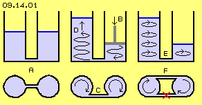
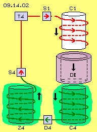
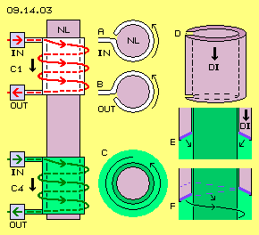
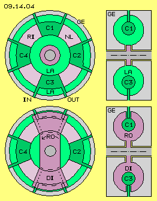
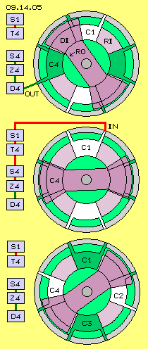
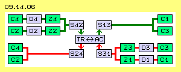
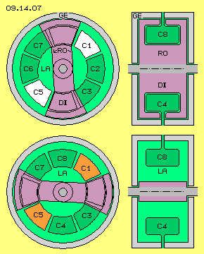
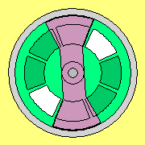

Objectives
Previous chapter 09.13. ´Capacitor-Mystery´ did show relevant points of view for storage of charge. Now here are discussed the technical possibilities for building a corresponding electrostatic current generator. The essential characteristics of that solution are quite different to common electrostatic machines. Only the Testatika (the only really working Free-Energy-Generatr) shows similar functions. At the following, the constructional principles are developed step by step.
Like Water
The behaviour of the electric current is often compared with liquids, e.g. concerning the charge-balance between two free standing charge-storages. Accordingly at picture 09.14.01 left side at A are drawn two tanks filled up with water (light blue). Below, both tanks are connected with a pipe, so likely water-levels (dark blue) exists within both tanks. At B, a piston (grey) presses down the water of the right tank, so the water-level of left tank rises up correspondingly. The ´obtuse´ pipe-connection at A would result much resistance. If however a tangential connection C is used, the water can flow off the right tank without resistance. Within both tanks comes up a turning movement. The additional water can enter and ´scew-up´ with the turning motion of the left tank by minimum resistance.

Also when the pump-process stops, the water will go on turning within both tanks. So in addition to the potential-difference (of different height), now did come up the cinetic energy of these rotating movements (by reduced resistance). At E, the piston is put off, so the water-levels will balance. Also that current should be guided through a tangential connection F, which however must be installed into opposite direction. The turning motion becomes more intensive. That process of building a potential-difference with following balancing can be repeated - with smallest possible friction losses. The motions of electric currents should be organised likely ´fluid-like´.
Charge-Interim-Storage
The behaviour of a fluid is really comparable with the electric charge. However the charge does not exist by chaotic movements of particles but it´s an area of ordered aether-swinging. Also, the charge does not exist within a tank but the universal aether-pressure ´sticks´ that motion-layer at a material surfaces. At picture 09.14.02 below right side is sketched a round cylinder shaped charge-storage C4 (dark green) where all around exists an aura of the charge (light green).

The ´pump´ here is represented by a dielectricum (DI, violet) in shape of a hollow round cylinder, which is put over the charge-storage C4 from upside down (see thick black arrow). It´s well known respective it´s explained by previous chapter, why the moving of a dielectricum along (capacitor-) faces demands only few power. The dielectricum pushes down the charge along the surface of C4 (at least by parts). The basic law of electric movement is ´forward-left-turning´ (here always by view of the real direction of electric-current, thus from minus to plus). So the charge should turn (by view top-down) counter-clock-wise, thus screwing down (see spiral arrows). Below exists a tangential connection towards left to an interim-storage Z4 and at its surface, the charge is flowing upward (again left-turning by view into that upward-movement).
The diode D4 prevents back-flowing. The charge momentary can flow only up to the switch S4. The round shape of that interim-storage is advantageous because enclosing a charge-volume by most small surface. Additional charge demands only a relative small extension (counter the general aether-pressure) of the surface. Analogue to the rotation at previous water-tanks, also here the transport of charge is running by minimum resistance. If a charge already exists around that interim-storage, it can still take additional charge from storage C4. Also at the end of that ´pump-process´, the charge will go on turning around the cylinder-face of the interim-storage Z4 (and also the remaining charge around the storage C4).
Potential-Gradient
Analogue to the example of previous water-tanks, here the ´dielectricum-piston´ produces a relative ´empty´ storage, like here e.g. the charge-storage C1 (marked white). If now the switches S4 and S1 allow a conductive connection, the charge from interim-storage Z4 will flow into the storage C1 until the potential is balanced. The balancing flow of water through upside connection-pipe F can merely be used, e.g. because a water-turbine needs a continuous flow. Opposite, a transformer works only by impulse-like currents, like here coming up by that abrupt charge-exchange. So usable current is generated within the secondary coil of transformer T4.
Naturally the outlet flow of interim-storage Z4 and the inlet-flow to storage C1 must be left-turning. After the balancing of potentials the charges around the surfaces will go turning. That process can be repeated - by minimum resistance. That´s not only important at ´coarse-matter´ movements (e.g. of upside water-tanks) but also at all electric processes. At both cases the appearance of ´mass and inertia´ finally is based on the resistance of the aether versus chances of movements and locations. At conventional capacitors, the charge is pushed into a ´dead-end-street´ and from still-stand must be accelerated into contrary direction. Opposite, a ´fluid-conformous´ steady flow of charge is organised by the charge-storages used here. Especially advantageous is the round cylinder-shape for strong and fast outlet flow off the interim-storage, because the surrounding Free Aether can push off the charge by concentric pressure.
Steady Flowing and Turning

At picture 09.14.03 left side are sketched both charge-storages (C1, white, relative empty and C4, green). Along both surfaces the charge is flowing downward and left-turning. Each storage has one conductive connection for the inlet and one for the outlet (IN and OUT). As charge exists only at the outside faces, the round cylinders can be hollow respective are connected with a non-conductive material (NL, grey) inside. At the middle row at A schematic is sketches, how the conductive inlet connection tangentially ends at the cylinder. Analogue at B the tangential outlet is drawn. At C is marked, how the charge is turning around the cylinder at the middle part, even if no forward-motion momentary exists.
Upside right at D is shown, that the dielectricum (DI, violet) can not be a complete hollow-cylinder, but must have a gap (marked yellow) for the inlet- and outlet-connections. The dielectricum should be funnel-shaped at the frontside, so charge is pressed onto the surface at its best (see arrow at E) and finally is shifted into the interim-storage. In addition, that front-face should be twisted in order to affect trust into turning sense (see arrow F). The inclination of that ´screw-face´ might be relative small, because all charges anyway are left-turning at all storage-faces.
The face at the frontside should be a conductive material (blue). The ´pump-piston´ is moving within areas of charge all times. So charge will soon stick also at that face. As only negative charges exist, that face will affect rejective at the charge at the storage-surfaces. Both are ordered motion-pattern, so the charge is translocated into the interim-storage by most few power. Opposite, the rear-face of that piston should be dielectric material, thus the Free Aether can affect most strong pressure onto that face of ´disorderly motions´ (like explained at previous chapter).
Ring-Shaped

Picture 09.14.04 shows why that conception is named ´ring-generator´: four charge-storages (C1 to C4) are arranged ring-shaped (see cross-sectional view upside left). Each storage is build by a curved pipe. The sections are connected by a ring (RI, grey) of non-conductive material (NL). Each storage has two conductive connections towards outside, each one for the inlet and one for the outlet (IN und OUT). The housing (GE, grey) builds an area for the charge (LA, light green) around the storage (see longitudinal cross-sectional view upside right).
At this picture below right side, that area of charge is filled up by the dielectricum (DI, violet) completely. So at this position, charge momentary is pushed off the storages C1 and C3. The storages are about 45 degrees long. The dielectricum is some longer, e.g. about 55 degree, because the front-face is funnel-shaped. Both dielectricum-pistons are connected by a cross-beam (see below left) and that beam is fix installed at the shaft (dark grey). Based on the turning of that rotor (here all times left-turning) charge is pushed off the storages all around and previous discussed processes continuously are repeated. Expecially advantageous is the fact, all charges and flows are running only within the stator, so the rotor is a relativ simple constructional element.
Phases
Picture 09.14.05 shows the rotor (RO, violet) at three positions during its (left-) turning. Upside at the picture, the rotor momentary is positioned between charge-storages C1 and C4. The dielectricum (DI, violet) will push off charge from C4 by further turning. That charge flows off the outlet-connection (OUT, green) and through the diode D4 into the interim-storage Z4. Momentary the conductive connection is ending at switch S4 (see green conductive way).

After that first phase of charge-displacement follows the second phase of charge-balancing, like shown at the middle of this picture. When the rotor completely covers the storage C4, exists only the remaining rest of charge at C4 and same time, the interim-storage Z4 is charged at its maximum. A minimum charge also shows the storage C1 (white) which was ´swept clean´ at an earlier phase. Thus a charge-potential respective a voltage-difference exists between Z4 and C1. If now the switches S4 and S1 offer a free conductive connection, suddenly occurs a balancing flow (see red conductive way up to inlet IN of storgage C1). That impulsive movement flows through the transformer T4. The generated secondary current is available for external usage (here not drawn).
That second phase ends when the rotor did turn further 35 degree (at this example), like shown at this picture at the bottom. Now the storage C1 again shows normal charge (green) and also the charge of the interim-storage Z4 is lowered down to the average strength. The previous process is repeated, where now the charge C1 gets pushed off (at analogue conductive ways and constructional elements, here not drawn).
To the end of the second phase, charge could be fed into the system from an external source (here not drawn). By that procedure, all storages are charged when starting the system and at running mode, possible charge-losses could be restored. If higher performance is demanded, additional charge can be put into the system at this phase or opposite, by lowering the charge one can drive down the system. So at the end of the balancing phase, the system can be controlled by adjustment of the charge-level.
AC-Trafo
The rotor is a rather simple constructional element. It should be build symmetric to avoid uneven momentum. This means, each two opposite storages are at same process-phase all times. At picture 09.14.06 all previous elements are marked. The upside row shows previous discussed way (green) from storage C4 to storage C1. At likely phase is running the charge transport from C2 to C3 (see second row). Both movements could be put together by switches S42 and S13. The combined (charge-) current flows through the transformer TR from left to right side.

A trafo functions based on increasing and decreasing currents into contrary directions. So the dislocation of charges from C3 to C4 (third row) and from C1 to C2 (forth row) should run through the transformer at opposite ways (here from right to left). So the generated secondary current will be AC. This is the normal mode of a trafo (TR-AC), here driven by displacement of charges in alternating directions.
Eight-Storage-Ring
Naturally, this constructional principle can be build by many variations. As an example, picture 09.14.07 shows a ring of eight charge-storages (C1 to C8). The rotor (RO, violet) again is build as a symmetric beam. Each storage is 40 degree long, each dielectricum (DI) some longer with about 50 degree (for the ´funnel´ at their frontside). Each two storages momentary are working at likely phase. Upside at this picture, momentary the storages C8 and C4 are completely covered by the dielectricum. Short time before, the storages C1 and C5 were ´swept clean´ (marked white). So these storages now can take charge from the interim-storages (here not drawn).

Below at the picture, the rotor did turn about 80 degree. So there is sufficient time for the charge-balance phase, e.g. to fill up C1 and C5 (now marked red). At this arrangement of two times four storages, each storage is acting within a dedicated phase: from one storage momentary the charge is pushed off into its interim-storage. The storage behind (in turning sense of system) momentary has minimum charge and can take the strong flow at the begin of balancing process. At the third storage that balance-flow comes to an end. At the forth storage can run controlling functions: reloading possible charge-losses, primary charging for starting the system, increasing the voltage for stronger performance or releasing charge for driving-down the system. The following animations shows that circuit process.
This picture right side shows schematic longitudinal cross-sectional views through the system. The cross-sections of the storages are here not drawn round but rectangle with round edges. The charge respective current can still run around. This construction allows wider storage-surfaces by relative small volume of the housing. The calculations of previous chapter are repeated for this example at the following.
Questional Performance
The storages reach from radius of 6 cm to 10 cm and are 8 cm wide. Each storage thus has a face of about 100 cm^2, both opposite storages of likely phase thus about 200 cm^2. At previous chapter a face of 314 cm^2 was charged by 1000 V up to 1 Coulomb. At these 200 cm^2 thus 1000 V could store about 0.6 Coulomb, and same charge-volume onto the corresponding interim-storage.

It´s strongly depending on the dielectricum used, how much charge is pushed off the storages. One could use glass (relative permittivity 8), china (about 6) or ABS (about 4). The shifting of charge however mainly will be done by the metallic ´funnel´ at the frontside. Decisive however will be the distance of the gap between that ´pump-piston´ and the storage-face, e.g. only 1 mm or 0.5 mm are possible. The performance of the system is extremely depending how much charge can be translocated into the interim-storages.
If e.g. only one tenth is pushed off, the storage-pair of original 1000 V and 0.6 C would show only 900 V (versus the earth) and 0.54 C. The interim-storages would rise up to 1100 V and 0.66 V. The potential-difference between that interim-storage and the ´empty´storage will be 200 V resp. 0.12 C at the beginning of the balancing phase. The difference to complete balance however are only these 100 V and 0.06 C. Only these 63 % of first time-unit are valuable, thus only about 63 V with some 0.038 C. The stored energy resp. work is gnerally calculated by formula W=0.5*C*U^2, so here W=0.5*0.038*63^2 = 75 Ws. Each full turning of the rotor delivers an impulse of four storage-pairs. If the system is runing 1500 rpm, 25 turns are done each second, i.e. impulse/sekonds come up. The performance thus would be 75*100/3600 = about 2 kWh - as a cross-number.
If a shift-rate of 15 % is assumed, that theoretic performance rises up to about 7.5 kWh. If fifth part of charge could be pushed off, a gross-performance of about 15 kWh could be achieved. These numbers must be reduces for diverse losses. At the other hand, several modules could be installed at one shaft. So it´s absolutely an open question, which usable performance could be achieved by that conception - and only real experiments will show the answer.
Decisive Characteristics
One point however will be valid for any kind of electrostatic machines: sufficient wide faces must be used. So probably these ´Crop-Circle-Generators´ discussed at ealier chapte 09.11. show too small faces and might not really work. One essential characteristic here was the steady flow of charge into likely directions. The charge may not be ´static´ but e.g. must wind around the storage-elements - what e.g. happens at the Testatika-machine. There are also uses the interim-storages in shape of large capacitors (where however all plates are connected. That´s makes no sense by common understanding of plus/minus-thinking, but it´s an absolute approve, only more/less negative charges exist). I introduced these interim-storages first time at pervious chapter 09.12. ´Tilley-Cone-Generator´. These characteristics will examined once more at the following chapter, including some additional points of view.